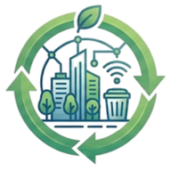
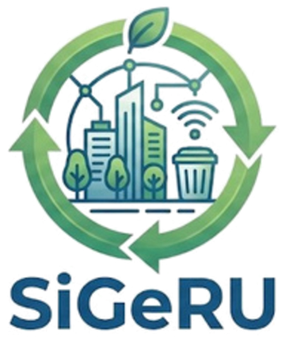

Vecinos
Reportan problemas, consultan el mapa y reciben aviso cuando se resuelve lo que informaron.

SiGeRUGestión de residuos urbanos
SiGeRU conecta a vecinos, cuadrillas y municipio: reportá un contenedor desbordado en segundos, seguí su estado y ayudá a planificar mejor la recolección.

Cada contenedor tiene un código QR. Al escanearlo se abre el formulario de ese contenedor, sin buscar direcciones.
Desborde, rotura, quema o falta de recolección. Si otro vecino ya avisó, tu reporte se suma al existente.
El municipio asigna una cuadrilla y, si tenés cuenta, te avisamos cuando el problema queda resuelto.
Consultá antes de salir qué contenedores están disponibles y dónde llevar tus reciclables.
Reportan problemas, consultan el mapa y reciben aviso cuando se resuelve lo que informaron.
Ven sus tareas y el recorrido del día, registran cada contenedor vaciado y los insumos usados.
Registran ingresos y egresos de residuos, controlan la capacidad y el estado de la maquinaria.
Gestiona contenedores, flota y rutas, asigna incidencias y analiza estadísticas para decidir mejor.
Los vecinos quedan habilitados al instante. El personal municipal queda pendiente hasta que un administrador lo apruebe.